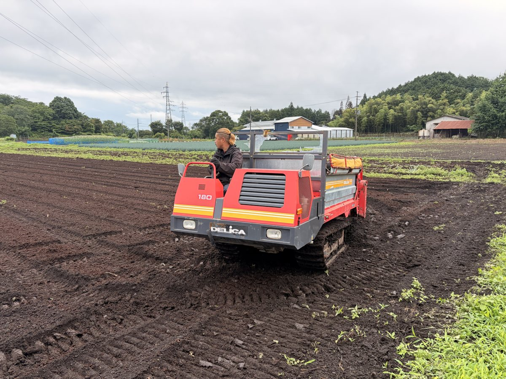
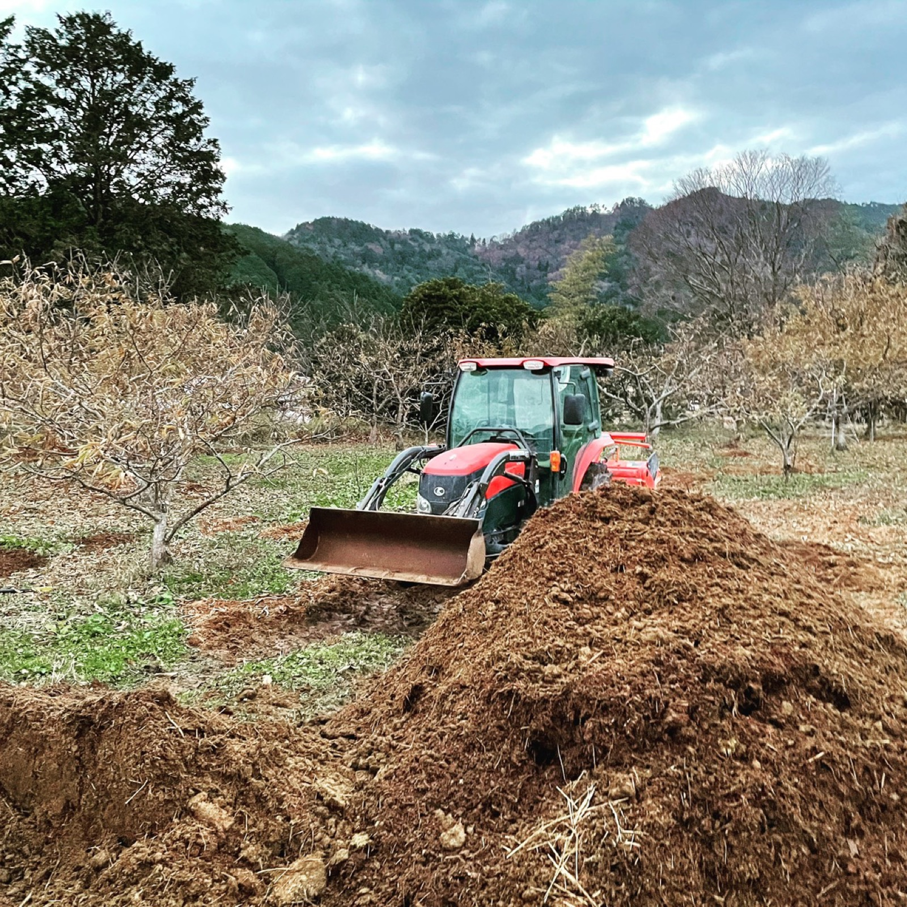
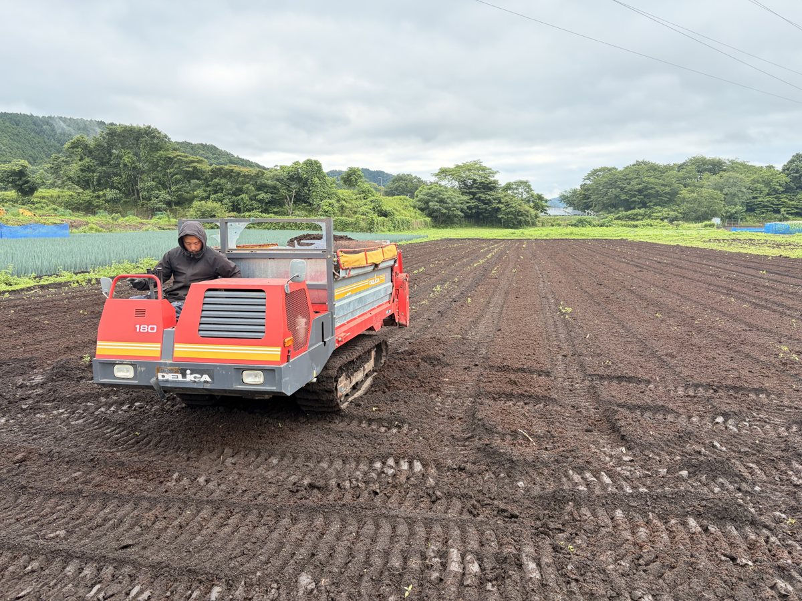
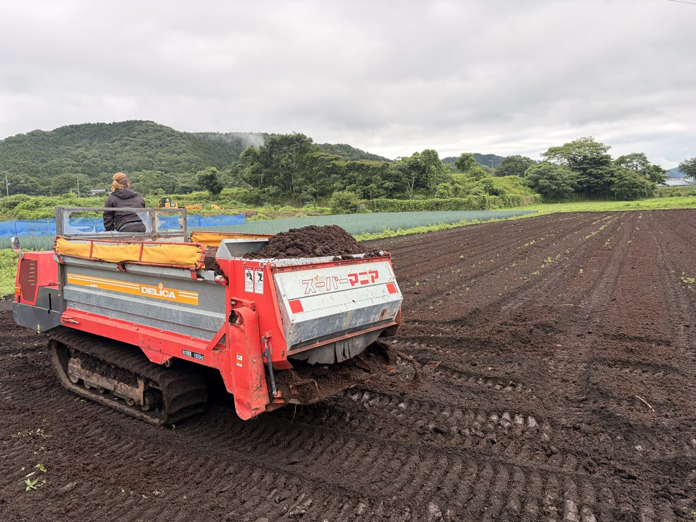

TAMBA NOSHO
牛のふんは、捨てるものではありません。但馬牛の牛ふんと、牛の寝床に敷いたもみ殻・稲わらを、自分たちの堆肥舎でじっくり発酵させ、完熟堆肥にして田畑へ還しています。
「森は海の恋人」。ミネラルの詰まった堆肥を海に届け、漁場を元気にするプロジェクトにも挑戦しています。

私たちの堆肥舎は、20年前に火事で廃業したままになっていた堆肥舎を改築したものです。堆肥づくりに欠かせない、空気を送り込むブロワ（送風機）を入れて、循環型農業の拠点としてよみがえらせました。
堆肥舎は栗園のすぐ近くにあります。自分たちで育てている但馬牛の堆肥を、良い状態のまま栗や野菜、牧草、米の土に入れることができます。
田んぼでとれたもみ殻と稲わらを、牛舎の寝床に敷きます。
使い終わった寝床と牛ふんを、堆肥舎に運びます。
ブロワで空気を送り、温度や臭いを確かめながら発酵を進めます。
完熟した堆肥を、牧草地や田畑、栗園の土に入れます。


自分たちの田畑だけでなく、丹波市内や朝来市の農家さんからも堆肥の散布をお任せいただいています。堆肥を運ぶ機械とまく機械を組み合わせて、田んぼ一枚一枚に堆肥を入れていきます。
堆肥と牧草を担当する栗原直人は、化学の博士号を持ち、土壌医検定2級に一発で合格しました。土の状態を数字で確かめながら、堆肥の品質を見ています。
いい土から、いい作物と牧草が育つ。その牧草を食べて牛が育ち、牛の堆肥がまた土をつくる。地域にあるものを余すことなく活かす循環を、この土地でつくっていきます。
牛・牧草・堆肥・米・栗をつなぐ循環型農業について栗原優介「関わるすべてに喜びを。」 堆肥づくりの現場を発信しています